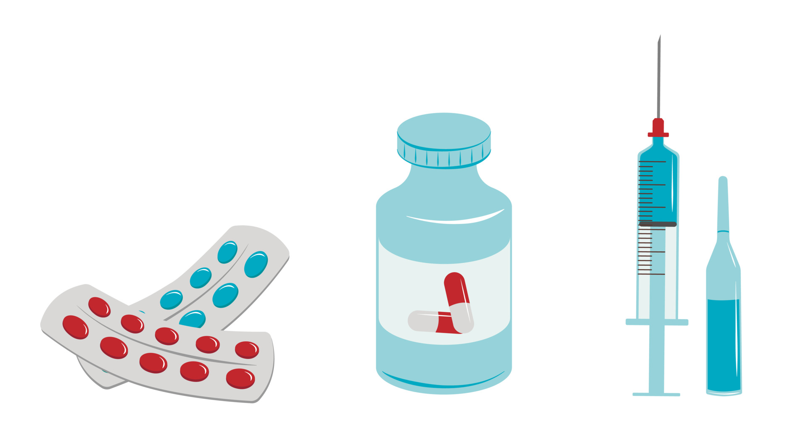

Substance Abuse
Substance abuse refers to the harmful or hazardous use of psychoactive substances, including alcohol and illicit drugs. One of the key impacts of illicit drug use on society is the negative health consequences experienced by its members. Drug use also puts a heavy financial burden on individuals, families and society.
